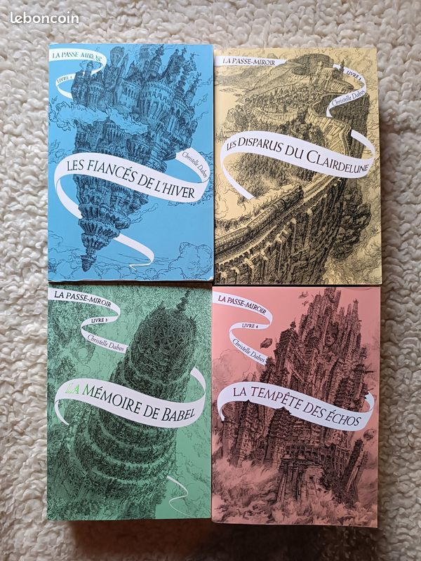

Je suis D'joud
Bonjour, je m'appelle D'joud. Je suis née en Haïti et je suis arrivée au Canada à 7 ans.
J'ai d'abord vécu à Montréal, puis en 2020 j'ai déménagé à Bois-des-Filion.
Dans mes temps libres, je joue de la guitare électrique ou de la basse, je lis ou je m'entraîne.
Sinon, je joue au volleyball avec les Nordiques. La musique et le monde du sport me passionnent.
Mon livre préféré est La passe-miroir de Christelle Dabos, parce que c'est un mélange d'amour de fantastique et de philosophie.
J'aime la manière dont l'auteur réuni ces genres littéraires pour en créer un nouveau. Depuis la première fois que j'ai lu ce livre,
je le relis à chaque année et je découvre de nouveaux éléments dans l'histoire. Je découvre de nouvelles caractéristiques
sur les personnages.
Je suis pas trop à l'aise avec les animaux, sauf les chats. J'ai déjà eu un chat dans mon enfance, donc ils ne me dérangent pas.
Je n'aime pas les chiens. Sinon dans 10 ans, je me vois dans une équipe professionnelle de volley dans un pays européen probablement.

Mes coordonnées
111-111-1111
Mes liens
Endroits à visiter à Tokyo
Mon collège
Me contacter